Put zombie processes to rest, from your phone.ゾンビプロセスを、スマホから成仏させる。


Killy watches your Linux servers for zombie processes and tells your phone when a parent is holding some. Hold a button for one second, and Killy sends SIGKILL to that parent.Killy は Linux サーバーのゾンビプロセスを見張り、ゾンビを抱えた親が現れるとスマホに知らせます。ボタンを 1 秒長押しすると、その親に SIGKILL を送ります。


Why the parent?なぜ親を狙うのか
A zombie process (<defunct>) is a child that has exited but whose parent never collected it with wait(). A signal sent to the zombie does nothing. The only fix is to deal with the parent.ゾンビプロセス（<defunct>）は、終了したのに、親が wait() で回収していない子です。ゾンビに信号を送っても何も起きません。直せるのは親のほうだけです。
Away from a terminal, nobody does that: you would have to SSH in, run ps, find the parent, decide whether it can go, and kill it. Killy takes those steps off your hands.端末から離れていると、まず誰もやりません。SSH でつなぎ、ps で親を探し、消してよいか判断して、kill する。Killy は、この手間を省きます。
How it worksしくみ
-
An agent watchesエージェントが見張る
The agent on each server reads
/procevery 5 seconds and reports the parents that hold zombies. It only connects out, so the server opens no inbound port.各サーバーのエージェントが、5 秒ごとに/procを読み、ゾンビを抱えた親を報告します。つなぐのは外向きだけなので、サーバーに受け口は開きません。 -
Your phone is notifiedスマホに通知が届く
A new parent with zombies triggers a push within 30 seconds, even with the app closed. Tap it to open the battle.ゾンビを抱えた新しい親が現れると、アプリを閉じていても、30 秒以内に push が届きます。タップすると対戦画面が開きます。
-
Hold to kill長押しで kill
Check the server, PID and command line on the battle screen, then hold the button for 1 second. The agent re-checks the process and sends
SIGKILL. The outcome is always shown.対戦画面でサーバー・PID・コマンドラインを確かめ、ボタンを 1 秒長押しします。エージェントはプロセスをもう一度確かめてからSIGKILLを送り、結果を必ず表示します。
What Killy guaranteesKilly が守ること
One action操作は 1 つだけ
Only SIGKILL. There are no other signals and no other commands.SIGKILL だけです。ほかの信号も、ほかの操作もありません。
The same process, or nothing同じプロセスだけ
Right before signalling, the agent checks through a pidfd that the process still has the PID and start time you were shown, and still has zombie children. A reused PID is never killed.信号を送る直前に、エージェントが pidfd で、見せたものと同じ PID と開始時刻のプロセスで、まだゾンビの子がいることを確かめます。再利用された PID は kill しません。
Protected processes守られるプロセス
The agent never kills PID 1, itself or its own ancestors, whatever the Killy server asks.エージェントは、Killy サーバーに何を頼まれても、PID 1・自分自身・自分の祖先は kill しません。
Only your phoneペアリングした端末だけ
Only a phone paired with a server can see its zombies or send it a kill. Pairing codes work once and expire after 10 minutes.サーバーのゾンビを見られるのも、kill を送れるのも、そのサーバーとペアリングした端末だけです。ペアリングコードは 1 回だけ使え、10 分で失効します。
Killy shows what it will kill. Whether that parent is safe to kill is your decision.Killy は、何を kill するかを見せます。その親を kill してよいかの判断は、あなたのものです。
Install the agent on your serverサーバーに agent を入れる
The agent runs on each Linux server you want watched: Linux 5.3 or later, amd64 or arm64. Download killy from this site, then pair the server with the app.見張りたい Linux サーバーごとに、agent を動かします。Linux 5.3 以降の amd64 または arm64 に対応しています。このサイトから killy を取得し、サーバーをアプリとペアリングします。